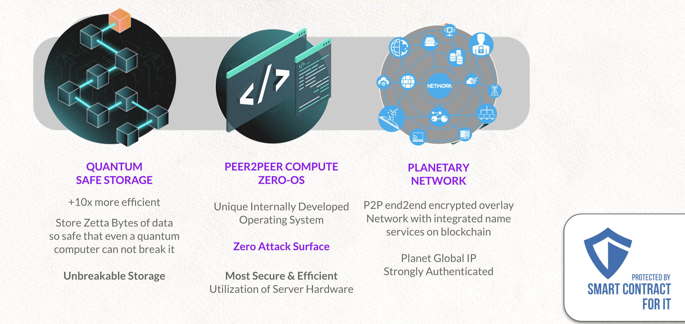
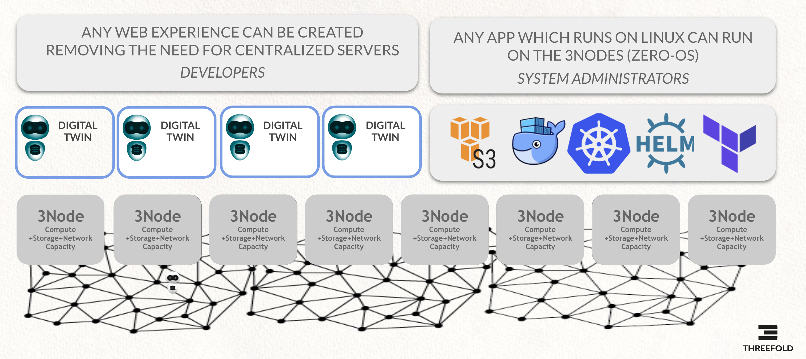
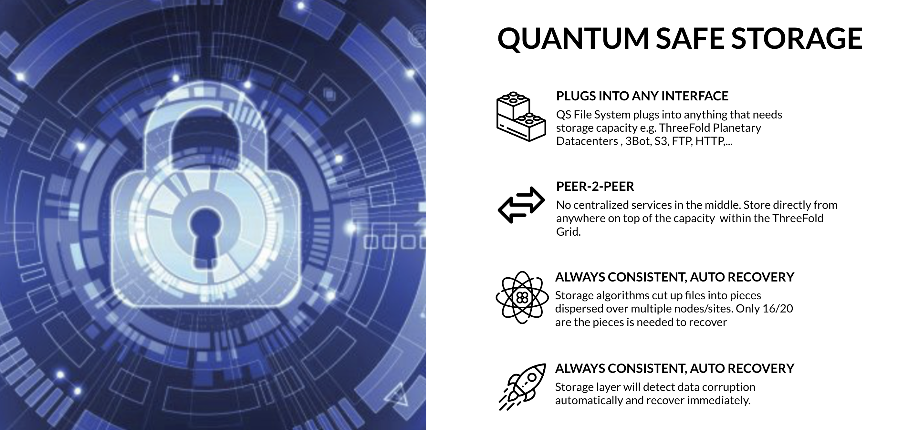

Grant
- Received Grant Before: No
- Grant amount total; 500k
- Grant Id:37
- Completion: 80%
- User Id: 168 (maybe this should be relocated)
- Company or Organization: ThreeFold
Benefits
If successful the project will bring new scaling opportunity for level-1 protocols to execute value transactions and smart contracts.
Problem: the current technology reality is that level-1 blockchains carry forever it's history which will put an increasing demand on storage requirements for all participating nodes. This is not very sustainable or efficients.
The number of implementations of DAO's is goinf to be exponentially growing and there is a need for level-1 blockchain protocols to be able to deal with the increased volume of transactions and history where pruning is going to be needed.
Our Solution is
- Thin provisioning can deploy blockchains with at least 3x storage requirements and bandwidth requirements for intial deployment (done)
- Thin provisioning works for most blockchain systems, this has now been proven. (done)
- Further integration storage backend of casperlabs would benefit even more. (next grant)
- Pruning support for blockchains
- Show how a solution can be created using ThreeFold storage components (is using 30 years of experience)
- Demonstrate applicability
- Create specs & solution upto to a pruning DB which can then be used in a next grant to integrate tightly in casperlabs DB
The result of this grant are massive important for the blockchain industry, storage is a big issue.
Our Team has massive experience in storage & internet technology
- first data deduplication system in the world for datacenters & backup (acquired by veritas/symantec) (2002)
- first always consistent distributed key value database in the world https://dbdb.io/db/arakoon (2010-2015)
- first proof of blockstake blockchains in the world (was called Rivine, discontinued because of lack of funds)
- first distributed storage system based on forward looking correcting codes (see Amplidata, used by major governments), scales to zetabytes
- probably first and super high performance always consistent disk volume driver on top of Arakoon and Amplidata, we were able to demonstrate 10.000.000 IOPS in 1 rack back in 2013
- first distributed block based storage system on top of Infiniband for ZFS (was done just before we were acquired by SUN microsystems)
- major world records in relation to hosting of very big internet sites (1998-2000) with global loadbalancing and caching at a time this was not done yet
We are delighted to use this expertise for the benefit of the world and are grateful for the chance devxdao gives us to develop and contribute even more.
Milestone 1 (100% done) = 250k USD
- Milestone title: Initial pruning research document
- The portion that the OP is requesting from the total grant for the milestone:
- USD 250.000 (was $100k originally)
- Due date:
- done
- Details of what will be delivered:
- prove Layer-1 blockchain thin provisioning can be done (this is a massive achievent and has incredible benefits for the industry)
- prove Layer-1 blockchain pruning can be done, come up with required architecture
- solution for thin provisioning based on threefold quantum safe filesystem (this requires changes in this system)
- Initial research will be done with the Casper Labs Layer-1 protocol and also some other blockchains.
- Create the solution which allows everyone to verify thin provisioning can be done.
remarks: we were an early grant and were trying to get feedback before submitting because there was no clarity for us how to do it and how sure we would be on the grant. We might have been not good enough in our communication, but the grant got removed before we could receive funding for the work done. We hope that this might be recovered, as such we have updated this document to reflect our current situation and work done.
Acceptance Criteria:
we hope that the reader can see how this work has an incredible potential for the blockchain industry. We have been able to show how blockchains can be deployed using more than 5x time and bandwith benefit, this shows the potential of how pruning & thin provisioning migh be achieved.
- thin provisioning solution can be deployed (based on pokt.network for now) and can be done by everyone
- see how the thin provisioning cuts heavily on bandwidth and storage requirements (5x benefits easy to achieve)
- deploy a large blockchain in less than 1h which would have taken days before
- all required code to allow everyone to experiment (see pokt.network in research)
- all code is opensource (threefold as well as the deployers for thin provisioning)
- research for industry, different approaches around thin provisioning & pruning (see research part of document)
- define solution which allows implementation for pruning for casper labs
- do detailed research about casper labs to see how integration can be done (and if): our conclusion it can be done
- link to required technology parts as provided by ThreeFold, see if we can use those solutions and what benefit would be
- do all required work to let it work on ThreeFold Grid
Milestone 2 (90% done) = 150k USD
implement all required components for base system as defined in solution part of doc
Acceptance Criteria:
We have been able to leverage a lot of technology from Threefold Tech which has been developed over the last 10 years. This grant was all about making sure and improving this codebase so it can be used for casperlabs. This is the result of hundreds of manmonths for which we are delighted to receive some recognition in a form of a grant.
- zdb with all required features as required for the prune DB (opensource)
- zdb storage containers
- caching capability if the technology
- FLECC codec implemented and available as golang code (opensource)
- ZDB storage containers caching & encoding with FLECC codec.
- FLEXX encoding & distribution to 20+ backends
- self healing on the data, prove that data cannot be corrupted
- automatic recovery of broken ZDB instances on nodes
- deployment system on top of TFGrid
- metadata system
- read path is redundant, can come from multiple ZDB backends
- better description of the solution
- documentation and make demonstration tutorials in text and video
- document all links to code & scripts as used on above
Milestone 3 (0% done) = 100k USD:prunedb + testing & documentation
- prune db
- examples in VLANG or GOLANG how to use the prunedb for a blockchain like casperlabs
- performance test
- scalability test
- reliability test
- documentation
Future Grants
Integration in Casperlabs Blockchain Backend
- show how seamless pruning can be implemented in POC using the blockchain engine
- this is a serious job and will require quite some effort to make sure it happens in the safest way and gets well tested.
- this will require low level integration so that the data paths dont change to much.
- Use the Blockchain layer to also prove authenticity of the pruning storage layer (is an extra check, not strictly needed, but might give extra confidence to community).
Redundant write path for pruning DB
Use e.g. tendermint to write in redundant way to the backend.
Production Readyness & Testing
Testing this new pruning layer in all its facets on performance and reliability level.
Master-Slave Solution for pruning DB
- Make Pruning DB Redundant (active-active or active-passive)
- Show how there is never a reliability issue, create good test cases to show this redundancy.
Research Intro
This research document represents the first milestone in the grant that has been awarded by DEVxDAO. This document will lay out the challenges that need to be overcome to create a lasting generic solution for the blockchain forever growing data storage problem and then identifies solution paths to this challenge. This document will present a number of solution paths to be looked at and then, as a conclusion, a proof of the solution will be implemented in milestone 2 of this grant.
Extensive research has been done by a group called ThreeFold into creating a decentralized technology with compute and storage capabilities to build a new internet that is not in the hands of a few monopolies. This research is centered around a solid "layer-0" software stack and we intend to put it to work in conjunction with new innovation to find a decentralized autonomous solution to the blockchain pruning problem.
This research document will look at publications and literature to see what history has taught us how to deal with growing datasets and increasing importance of digital data. Areas that will be investigated are the well known area of backups (full and incremental) and archiving. Another area which might get us some insights is de-duplication of data before it is archived or backed up. Also, we will look at other publications describing research or projects about finding a (partial) solution to the pruning challenge.
The biggest work is to test the algorithms available to ThreeFold for a blockchain like Casperlabs and see if benefits can be achieved.
After reviewing what has been developed, implemented and proposed as solutions, we will present a number of methods by which we believe we can get to an acceptable pruning solution. We will present SWOT analyses on the methods presented and select the few that are most feasible to get to the required result.
Pruning is not the only solution to the data problem, thin provisioning is as important. Thin provisioning means that not every blockchain needs to sync all available information.
The selected methods will then be architected to a level where we can see how this would work in a real life situation and what is required to achieve this. Recommendations for the second milestone will be presented and risks and limitations will be cited.
Purpose: thin provisioning & pruning research
Layer-1 blockchain pruning is key to its growth and applicability to any blockchain and/or DAO growth. Initial research will be done with the CasperLabs layer-1 protocol. If successful, the project will bring new scaling opportunities for level-1 protocols to continue to execute value transactions and smart contracts without performance loss for ever. The current technological reality is that level-1 blockchains will carry forever their history, which will put an increasing demand on storage requirements for participating (full) nodes retaining a complete copy of the chain. This is not very sustainable and efficient. Furthermore, it effectively leads to centralization by limiting the number of network participants which have the resources to deploy adequate storage (and to a lesser extend compute) capacity to run a full node.
Possible solutions may defer the problem into the future (compression of data) or require complex structural changes to the protocol itself (different node sub-processes/roles or sharding). The question we propose to address is: "How can nodes participate in consensus and the maintenance of a full blockchain without needing to store a complete redundant copy of the chain data locally?".
Many protocols already offer "pruning" features within their node software, so that while the full chain is downloaded and verified, only the newest blocks are retained. These nodes are able to participate in consensus and provide a secure way to interact with the network, but they offer limited benefit in the securing and maintaining of the chain.
Implementations and deployments of decentralized systems like DAOs rely on blockchains for smart contract and transaction storage are expected to grow exponentially. In order for these systems to remain secure and truly decentralized, a solution is needed.
The problem: Forever growing data
Definition from the wiki:
A blockchain is a growing list of records, called blocks, that are linked together using cryptography. Each block contains a cryptographic hash of the previous block, a timestamp, and transaction data (generally represented as a Merkle tree). The timestamp proves that the transaction data existed when the block was published in order to get into its hash. As blocks each contain information about the block previous to it, they form a chain, with each additional block reinforcing the ones before it. Therefore, blockchains are resistant to modification of their data because once recorded, the data in any given block cannot be altered retroactively without altering all subsequent blocks.
Therefore blockchains by design create and carry historical data forever. The nature of a blockchain is that it stores data immutably and in an always-append manner. So from the moment of inception of a blockchain (the "genesis" block) to the current point in time (the latest block) all data (blocks) ever created need to be stored on and available on a sufficient set of (full) nodes to ensure the life of the chain.
This has profound implications for successful blockchains, regardless of their purpose. Whether the blockchain is a pure value transaction blockchain or it is a smart contract system with additional data storage requirements, it is all compounding to a forever growing storage requirement. To the extent that the data grows faster than the storage purchasing power of node operators, this becomes a centralizing force as fewer network participants can afford to host the whole chain.
There are two main categories of blockchains, each with specific benefits and disadvantages: permissionless and permissioned blockchains.
The first allows anyone to take part and start contributing to the network, the latter having a (central) authority that agrees who can participate and who not.
Both types of blockchains have the same challenge with regards to data storage: it is a forever growing chain of blocks which increases the storage needs of participating nodes indefinitely, but pruning solutions are very different because of the following:
- in a permissionless blockchain anyone can choose to participate to help to run and secure the blockchain by operating a blockchain node. Consensus and trust is based on an algorithm, not on any central authority.
- in a permissioned blockchain there is a central authority of some sort that allows blockchain nodes to be added to the network. The central authority provides trust and to a degree consensus.
So the blockchain pruning challenge is many times larger for permissionless chains then for permissioned chains.
Evidence of the problem statement
Overview (not exhaustive) of what the current blockchains experience in terms of data growth and the challenges that come with it at the current state of play of blockchain projects:
Reading through these articles we can find chain size growth figures of 50x over a period of 2 years. And with the exponential growth and adoption of blockchain technologies this is a real problem that lies ahead of us which is not going to be solved by the rate of which hardware is improving and becoming more affordable.
Conclusion
The blockchain industry needs a way how to prune old data, which means old data needs to be archived in such a way that the system still keeps on working.
Analysis
The current solutions to the forever growing data storage requirements to not tackle the real problem: How can we prune a blockchain protocol without putting limitations and restrictions on the protocol itself but provide a storage utility that is trustworthy and builds on the principles provided by the blockchain protocol without changing them?
Current solutions to forever growing data in blockchains
A non-exhaustive list of ways to deal with the data growth issue is:
- Compress data: keep storing data as is but lower the impact / footprint of it. Most already do this.
- Lower the number of full nodes in a blockchain: make the number of nodes smaller in order to have less copies of the data distributed which lowers the synchronization requirements (to retain a high transaction speed) and limit the overall hardware needed to operate the full nodes. This can be done by staking mechanisms and creating a set number of full nodes available in a chain.
- Create a hierarchy of nodes: split the blockchain functionality in components that together make up the full blockchain.
- Shard the blockchain: split the chain itself into smaller pieces that communicate through a single coordination chain
- Introduce a new storage paradigm: there are new codecs which might help to resolve the problem.
It doesn't have to be 1 solution but migh be a combination of above.
blockchain sharding
The practice of splitting a blockchain into multiple segments is known as sharding. This feature is planned for Ethereum 2.0 and is already live on the Zilliqa network. Sharding is presented as an emerging solution to the blockchain trilemma.
| Strengths |
|---|
| Reduces both the storage and computational load of nodes securing each shard, thus improving scalability and decentralization. |
| Weaknesses |
|---|
| Sharding is still an experimental technology and has issues in relation to always consistancy. |
| Adding sharding to an existing blockchain requires significant changes to the protocol itself. Its a very hard approach to get right, keeping a global state some say is impossible. |
| Opportunities |
|---|
| If successful, sharding can be a powerful feature and may find wide adoption among blockchains. |
| Node operators on these chains still stand to benefit from distributed archiving of their shard. |
| Threats |
|---|
| This is a complex addition to a protocol that comes with certain tradeoffs and adds additional attack surface. |
Lower the number of full nodes in a blockchain
Full nodes refer to blockchain nodes that contain and have 100% of the chain history available online with a complete history intact, true and secure for the whole chain. In order to control the quantity and quality of the nodes that make up the chain some project restrict participation to only known entities. This is often referred to as a "permissioned" chain. A few permissioned organizations (or people) are tasked to provide full nodes and deal with all the operational, security, scaling and reliability tasks. This can be with and without a rewards for doing so.
Non-permissioned nodes can be allowed to alleviate some of the operational workload, but these nodes are not considered to be authoritative for the true chain history. The true chain history is only provided by the (few) permissioned (full) chain nodes. This solution is chosen by protocol implementations to circumvent the problem, by having node operators that commit to put the investment in to have proper node sizing.
SWOT analysis
| Strengths |
|---|
| Efficient way of guaranteeing correct, secure and scalable chain operations. This can be a costeffective way how to achieve a solution. |
| Weaknesses |
|---|
| Its less decentralized. |
| The strength of a blockchain solution is that anyone can opt in to contribute and help to achieve security and safety. |
| By making blockchains permissioned the security and safety is lowered because the full nodes are operated by a set number of organizations and people |
| One node still has the full volume required, which makes running it and managing the issues around very big volumes still relevant. |
| Opportunities |
|---|
| Create a governance structure around blockchain technology that is in line with the traditional IT industry |
| Easier to get SLA's in place |
| Threats |
|---|
| Secure operations is threatened by having a limited, known number of permissioned operators. |
| The form a set of single points of failure for the whole chains operations and security. |
Compress data
Not really a solution, rather something everyone should do one way or the other and many are already doing. All participating archival nodes compress the blocks created to minimize the data storage footprint. There are many compression algorithms available and depending on the specific type of blockchain hardware certain algorithms present better options than others.
SWOT analysis
| Strengths |
|---|
| Simple to implement, plenty of compression algorithms available. Everyone should implement this system. |
| Opportunities |
|---|
| Quick to implement, quick to deploy. Its not a real solution, it just helps to postpone the problem somewhat, but most already have it build in |
A hierarchy of nodes
Another way to overcome this issue is to have a blockchain split the full chain process (workload) into subprocesses. Each subprocess can now be worked on by specific type of nodes that are tailored to operate that one part of the process. Examples are:
- Transaction nodes: a node that only provides transaction capabilities and possibly store the results
- Validator nodes: nodes that look at the transaction nodes and validates transaction through some sort of consensus mechanism
- Core/full nodes: nodes that store the full chain history and are authoritative for chain content
- Edge nodes: remote nodes that perform edge transaction in a fast and efficient way. There has to be some form of synchronization between edge nodes and core/full nodes.
By creating different nodes type the requirements for storage per node (type) are lowered.
SWOT analysis
| Strengths |
|---|
| provides independent scalability between different functions / processes off the full chain. |
| Weaknesses |
|---|
| Overhead is created by relying on the network to communicate between the different functions/subprocesses. Network speed might effect overall performance on the chain |
| Opportunities |
|---|
| when required subprocess's can easily be broken up into smaller pieces when needed or vice versa integrated into large components. |
| Threats |
|---|
| Complexity might lead to less security, simplicity is always the friend of security. |
A new way how to store data using forward looking correcting codes
This is what ThreeFold has been working on for a long time, the original solution was created by our team back in 2012 and was part of an exit of 300m USD. The software we have today is a completely new version and is even faster and more scalable.
Storage Literature Research and Remarks
Here some additional sources where information can be found on efforts on addessing blockchain storage concerns.
This section does not try to provide an exhaustive overview its just inspiration to come to the possible methodologies to find a generic solution.
Chain state snapshots
In addition to archiving the chain itself, verifiable archives of the ledger could provide an expedited way to restore node functionality or bootstrap new nodes.
Work has been done within the Bitcoin community around enabling backups of the chain state database.
See this discussion on considerations for such an approach and code produced to implement it.
Erasure encoding for blockchains
Erasure coding means a mechanism that data gets cut into pieces so that less overhead is required to store information over multiple disks.
Erasure coding is a simple form of "forward looking error correcting codes"
The question of applying erasure encoding to blockchain data in order to reduce the storage requirements of individual nodes has been explored in this paper.
The authors conclude that such an approach can provide strong assurance of data correctness without large computational overhead.
We believe this is a very elegant way and should be done but care needs to be taken for
- if using erasure coding technologies like reed solomon, there is a possiblity to loose data (also called the raid5 hole)
- order of operation is still important in reed solomon
- there is not that much flexibility in data positioning and systems can be rather fragile if not done properly especially in networked environments
We as threefold are a big proponent of this approach if done properly.
Proofs of Retrievability
Nodes who agree to share the task of storing blockchain data have an interest in verifying that the data is in fact recoverable.
To avoid the overhead associated with actually recovering the data, a compact computational proof may be used instead.
These authors describe an algorithm based on erasure encoding and random sampling to generate such proofs.
There are multiple ways how proof of retrievability can be implemented as ThreeFold we have implemented a novel way how to do this without the overhead of what is described above.
Stateless clients, sharding, and scalability
Ethereum's Vitalik Buterin has written extensively on the problem of blockchain scalability and the importance of keeping node operation accessible for the health of blockchain networks. He proposes that beyond pruning the chain, nodes might not need to store any state at all to validate blocks and help secure the network.
Sharding is the approach being taken to improve scalability of Ethereum in it's 2.0 version. This post explains how sharding can be more secure than simply linking multiple chains in a blockchain ecosystem.
"The Limits to Blockchain Scalability" details reasons why making node operation accessible is important for chain security. Includes an analysis of what realistic hardware limits are for node operators before becoming too great of an investment to discourage general participation.
A highly resilient chain archiving mechanism would help especially in the case described below:
This is all even more important during an attack, when a successful response to the attack will likely involve many users spinning up new nodes when they were not running nodes before. {{#include storagebackend_lmdb.md}}
Data Deduplication
Data deduplicatio technology has been around for the length of the digital age. We should take a look at what the findings and results are to do reliable, trustworthy and secure backups.
Backup de-duplication was invented in the early 2000's. Up to that point in time datacenters with thousands of servers with the same OS would backup the same systems files a thousand times over. With the rise of the digital age this became very expensive quickly efficiency and competitive drivers forced innovators to start looking at data de-duplication. Once of the earliest implementations are described in this patent which is by the way a patent as done by one of our first companies from our Incubator, please do not we don't believe in patents any more and we don't execute on any of them, we believe the only way forward is opensource.
The use of hashes to comparing local files and backed up files in a central storage facility is a very elegant manner to know if a file (read data) is already backed up. This works not just for one server with files installed but also allows to reach large efficiency gains over a large number of servers.
Excerpt from the patent file:
The invention relates to an improvement in backup technology, and more particularly, creates a solution for massive server backup in Internet data center and enterprise data center environments, resulting into a solution for disaster recovery and data protection. The invention is an improved System and a Method of using a hashing key of file content for more efficient and more effective computer file and computer program backups.
The first step in the process is to scan the file system on the target machine (computer system to be backed up) and creating a hashing key, creating a unique digital code for each of the files to be backed up. In a preferred embodiment, in order to reduce the processing time, a hashing key is only created for the files having a modification date attributed that is more recent than the last backup.
The resulting hashing keys are stored in a local database—a database on the target computer, for example—for further comparison during the current, and future, backup sessions. The local database also includes the complete path of each backed up file.
The stored hashing keys are checked against previous hashing key entries in the local database. In this way, the hashing keys are used to check each local file to determine if it was previously backed up on the target system. The hashing keys not found in the local database key list are used in the next step of the process.
The hashing keys that were not found in the local hashing key database are checked against the hashing keys of the files stored on a central storage server. This check is used to determine if a particular file is already present on the central storage server. The file may be present as the result of a backup from another server or system, or from prior backup operations.
The decision whether to back up is performed file by file, instead of block-by-block for example. This strongly reduces the number of comparisons and the size of the local database, and is very well adapted to farm servers in which not only data blocks, but often complete files, are duplicated in several servers.
This principle, identifying a 'blob' of data by a hash and then checking whether that hash already exists in a data store is a sound principle to also use for blockchains pruning and de-duplication. By definition blockchain nodes will contain the same data on all nodes that are considered to be part of the good nodes. For pruning purposes this data is meant to be stored elsewhere and on the blockchain node itself (which leads to N copies of the same data on all N nodes). The principle describe in the patent paper, to identify a chunk of chain data by a hash and then somehow (to be defined) checking this hash against all the participating nodes seems like a good consensus mechanism that all the blobs of data have the same content. After such proof has been created (and store) the data can be stored remotely is a (to be defined) smart manner.
If we take this principle and apply it to a blockchain and the pruning challenge then, identifying a 'blob' of data by a hash and checking whether that hash already exists in a data store is a sound principle to also use for blockchain pruning and de-duplication. By definition blockchain nodes will contain the same data on all nodes that are considered to be part of the good nodes. For pruning purposes this data is meant to be stored elsewhere and on the blockchain node itself (which leads to N copies of the same data on all N nodes). The principle describe in the patent paper, to identify a chunk of chain data by a hash and then somehow (to be defined) checking this hash against all the participating nodes seems like a good consensus mechanism that all the blobs of data have the same content. After such proof has been created (and store) the data can be stored remotely is a (to be defined) smart manner.
This technology is battle proven over the last two decades and provides a solid starting point for a blockchain pruning solution. We will come back to this later and use it to build a pruning system.
Offload blockchain databases
We did extensive research to try to reduce bandwidth requirement to get a working node running quickly using our quantum same storage system.
The blockchains we experimented with:
- Casper Labs
- Cosmos
- Harmony Blockchain
- Substrate based blockchains
- Most Ethereum based blockchains
- Pokt.Network
We also researched lots of other blockchains, to see where it would work.
The research took a lot of time, we only put some conclusions into this document.
Setup
In order to get a node working, documentation ask you to clone a copy of the current blockchain database state using rclone and
grabbing data from a AWS storage source.
I did it on my machine with a 400 Mbps download line, it took 50 min to download the whole 40 GB database (testnet), which make an average
download speed of 14 MB/s.
I've put a copy of that database into a local zdbfs and mounted an overlayfs on top, then used that overlayfs as endpoint for Harmony database.
With this approch, Harmony will read data from zdb/zdbfs but write changes into a classic local storage space, zdbfs is thus used as read-only source
and local space will only be used when required (updated files).
Numbers
The database get cloned 4 days before the day I did the real test, let's assume database was up-to-date when cloned, when running the node,
it would need to sync 4 days of new data. When starting the node with local classic storage with the database, node boot up in ~15-20 seconds (on SSD).
When using zdbfs, node boot up in ~30 seconds and read about 15 GB of data from zdbfs before being ready. Overlayfs at that time is nearly empty, it act more
like a passthru to zdbfs. After 2 days, Harmony were fully synced and 1.5 TB were read from zdbfs. Local storage space used is about 11 GB.
More test will be made to get better values and more deterministics details, theses values were fetched from zdb statistics at differents day moment.
Benefits
According to theses values, an average bandwidth of 10 MB/s is required between the node and zdb where database is, with only 1 zdb in a local network sharing the database
we can feed lot of node without the need to copy the full database locally, since after couple of days running, only 15 GB of data were allocated on the node itself, this reduce the storage needed by 4 per node and any node can boot in less than 1 min.
CONCLUSION
THE BENEFIT IS INCREDIBLE
We have been able to demonstrate how we can do thing provisioning on most blockchain databases.
Pokt.Network
Is a deployment solution for blockchains which demonstrates how thin provisioning works using ThreeFold Quantum Safe Storage FileSystem
As part of this research we have developed a deployment on Threefold grid to deploy pokt.

This was lots of work for our engineering team but now has now been integrated in our development branch ThreeFold Grid.
Its now possible for people to deploy Node Pilot on ThreeFold Grid.
We have been able to demonstrate:
- We can deploy a full deployer in < 30 minutes rather than days
This is amazing news it demonstrates how quantum safe filesystem is a solution for deployment.
We still need to do some hardening to let this work on more blockchains.
We have been able to test this on all blockchains as port of Pokt.Network, we recomment everyone to play with this.
to try yourself see: https://play.dev.grid.tf/
Nodepilot
To make it easier for people to get started we used nodepilot
Casper uses LMDB
CasperLabs uses LMDB which provides some features we can tap into to provide pruning support.
LMDB is a big file on a filesystem and as such its hard to use some storage tricks on the quantum safe filesystem to implement pruning on that level.
To succeed with pruning on casperlabs we have to integrate in the storage layer itself, probably in the code of casperlabs itself which complicates this project.
Lightning Memory-Mapped Database Manager (LMDB)
LMDB is a Btree-based database management library modeled loosely on the BerkeleyDB API, but much simplified. The entire database is exposed in a memory map, and all data fetches return data directly from the mapped memory, so no malloc's or memcpy's occur during data fetches. As such, the library is extremely simple because it requires no page caching layer of its own, and it is extremely high performance and memory-efficient. It is also fully transactional with full ACID semantics, and when the memory map is read-only, the database integrity cannot be corrupted by stray pointer writes from application code.
The library is fully thread-aware and supports concurrent read/write access from multiple processes and threads. Data pages use a copy-on- write strategy so no active data pages are ever overwritten, which also provides resistance to corruption and eliminates the need of any special recovery procedures after a system crash. Writes are fully serialized; only one write transaction may be active at a time, which guarantees that writers can never deadlock. The database structure is multi-versioned so readers run with no locks; writers cannot block readers, and readers don't block writers.
Unlike other well-known database mechanisms which use either write-ahead transaction logs or append-only data writes, LMDB requires no maintenance during operation. Both write-ahead loggers and append-only databases require periodic checkpointing and/or compaction of their log or database files otherwise they grow without bound. LMDB tracks free pages within the database and re-uses them for new write operations, so the database size does not grow without bound in normal use.
The memory map can be used as a read-only or read-write map. It is read-only by default as this provides total immunity to corruption. Using read-write mode offers much higher write performance, but adds the possibility for stray application writes thru pointers to silently corrupt the database. Of course if your application code is known to be bug-free (...) then this is not an issue.
See on internet: LMDB
Casperlabs Storage Integration QSFS
Casper uses lmdb for the persistent storage in their blockchain. Lmdb, an in process key-value store, saves its data in a single file on disk. Since there is ever only 1 data file, and this data file is not changed (i.e. it is always modified), this rules out the usage of 0-db-fs / 0-stor to run (part of) the database.
The next best option is to analyze what data is stored in the DB. Mostly, we are interested in block information, as this is the main source of historic data. The idea would be to periodically remove "old" blocks from the DB, and move it to a secondary DB. If the amount of blocks stored in such a secondary instance is limited, this effectively creates a list of read-only (as blocks, once accepted and written, will never change) secondary instance data files. These files can then be written to 0-db-fs / 0-stor once they are finished, and removed locally. If historical data is needed from these blocks, the files can be recovered and read.
It should be noted the lmdb storage format is architecture dependant (x86 vs x86_64, little endian vs big endian). Furthermore, there are no guarantees about the internal layout of the data file in lmdb. As such, we can't really use lmdb for this, convenient as that would be. This can be solved however by creating a deterministic storage format for the data, and then writing this to a file. For example, we can simply use bincode, a rust binary encoder, to encode blocks, and write the results to the file. Given the same settings, which we can set statically in the software, the same result will be produced. Furthermore, we can statically agree to create such a file every e.g. 10K blocks (amount needs some research regarding block size). This will cause the same file to be generated on every node. This file can then be encoded and uploaded.
All of the above does require serious protocol support. Most notably, there needs to be consensus over which blocks to write to secondary storage and when. For the main chain, this is not a problem, as every node is expected to have these blocks (the exception would be temporary small forks, if this would be possible. For this reason blocks to be saved need to be far enough in the past). It is harder to also agree on orphaned blocks, without having some kind of active consensus mechanism. Since orphaned blocks are persisted in storage, they should eventually be moved to this secondary storage, however not all nodes will have this orphaned block, as some nodes might, e.g. have joined the network after this block was broadcast. This requires more investigation in the casper consensus protocol.
In this scenario, it seems best to run directly against 0-stor, as we would upload single files. Furthermore, 0-stor can be modified to return the metadata, and this metadata could then be broadcast on chain (through means of a transaction?). This makes sure every node has the metadata available to recover the uploaded file locally. (TODO: how to reach consensus over which blocks to store and what 0-dbs to use, who does upload, ...). Since both 0-stor and the casper blockchain are in rust, we can also opt to embed 0-stor (as we only need the core functionality).
todo: research storage layer of casper, put all findings here =======
Aim
The aim is to provide a storage solution, which manages to
- efficiently store historical data (with regards to used space)
- allows the data to be retrieved even when nodes are no longer reachable, or loose access to the data (intentional or accidental).
Solution : LMDB integrated with 0-stor
At Threefold, we already developed a solution which achieves most of this in 0-stor. This allows storing files in a distributed, redundant fashion, using forward-looking error correcting codes. Considering the existing storage layer in the casper node, we feel that integration and interoperation between 0-stor and Casper storage is a viable solution to the given problem.
0-stor is built to reliably store files with minimal overhead. Even though it can be run as a daemon in stand-alone mode, Threefold has developed a filesystem on top of it. An actual integration seems to be the best way forward: this allows the chain itself to drive the actual storage process. Considering that the existing storage layer uses lmdb, which is a single file embedded datastore, we will propose some modifications to this storage layer, to allow the usage of 0-stor.
- what is size of files -> lmdb uses sparse files, on my desktop at home the database file has a registered size of 750GB at startup
- what is min file, max -> Not relevant
- performance requirements
- what is data structure -> Single file
- how to manipulate positioning of the bigger files -> Not relevant
- are the large blocks the same ? -> Not relevant
- need to know how consensus has been achieved =======
Limit to historic state
First, it should be noted that 0-stor is not intended to be a high speed storage solution, but rather, reliable and space efficient. As such, we can't store everything. If we identify the storage at some block, then we can split this into an active and a historic storage part. We consider the active state to be the state which was either recently created, or can be accessed as a result of normal operation of the network. This includes recent blocks, recently deployed contracts, ... Historic data is composed of data which is no longer accessed by the network itself, such as blocks which were created some time ago. Considering the speed restriction, we will only consider historic state for processing.
=======
File encoding
Since Casper's current blockchain storage implementation is based on lmdb, which operates on a single data file, the option of encoding database files directly (should that be possible given the previously stated constraint) is ruled out.
To allow 0-stor operation, the following addition can be made. After every new block is stored, an older block (in practice, a block which is a fixed height behind the new block) is read from storage, written to a file, and deleted from storage. Every x amount of blocks, the storage file is encoded and uploaded, and a new storage file is started. This also means that a storage file has a fixed amount of blocks. The encoding of the data needs to be deterministic, so that all the nodes in the chain participating in the storage protocol have the exact same data. The above is specific for blocks, but can be used for other data as well. It should be pointed out that a node can't actually delete the data, as it needs to retain some way of knowing where it is. Multiple mechanisms can be used for this. For good operation with 0-stor however the file name needs to be deterministic. Besides this, the value in the database can be converted to point to this file name, which allows the storage layer to know that it needs to fetch the actual value from an encoded blob. Depending on the data and structuring, more efficient methods are also possible, which simply indicate that some data is in a blob. For instance, if a fixed amount of blocks is encoded per file, the file name can be used to indicate which blocks are in it based on their respective heights in the chain. It is then sufficient to merely indicate in the database that a block is off-chain.
Optional encryption
0-stor is build to support encryption of data before encoding it and uploading the chunks. Since this will generally be used for publicly known data, a small modification can be made which does not force this behavior. That removes overhead from the encryption step, which is not needed, but still allows it in case someone is running a private chain.
Requirements for Node implementation
We consider the following requirements for any node to store a chunk of data.
Incentive
For permissionless blockchains, the node needs to have incentive to do so, as storage uses disk space, which has a real world cost. A simple way to achieve this is to have a periodic payout for nodes which store data
- through creating of new tokens
- by distributing (part of) transaction fees.
Treatment of nodes behaving badly
Secondly, a node which has some data stored needs to make sure this is accessible for everyone, and that the data is not lost or otherwise corrupted. For a node to enforce this, the chain needs some way to punish the node if the condition is failed. One approach is to only allow nodes which have some amount of tokens staked participate in data archival, where the stake can be slashed in case a violation is detected. In this scheme, a node should only be able to unstake if it has no data stored. To accomplish this, a node needs the ability to step down as an archiver, which then causes the chain to elect a new node to store the data on. Once the new archiver indicates that the data is stored, the old node's unstaking completes. At this time, we believe that this consensus scheme can be tied into the existing consensus scheme for block validation. When a node stakes, it can indicate whether it wants to archive or not.
Election
After every x amount of blocks, when the storage file is rotated, the chain elects an ordered set of nodes out of all potential archivers. The election mechanism itself does not matter much. An option could be a modified Phragmén election. Note that it is possible to run the election offline, and only commit the results on chain. This might be needed, as the algorithm takes a noticeable amount of time to finish, which is impractical in the time constraint context of block creating. Once the election has ended, every elected node can use 0-stor to compute the storage chunks. They then archive the chunk corresponding to their ranking in the election, and publish the metadata of the storage on chain. This metadata includes the hash of the chunk. Since every archiver needs to compute every chunk, they can all verify each other's hashes and make sure the data is saved correctly.
0-db append-only key-value store
0-stor saves data to 0-db, an append-only key-value store. This is ideal, as data written is permanent and will never change. The info needed to connect to the right namespace is included in the metadata (IP:port and namespace name). This allows anyone to fetch the chunks for a particular data blob and reconstruct it locally. In case a 0-db needs to have scheduled downtime, or otherwise needs to be replaced, a node can spin up a new one, copy the data from the original one, and finally update the metadata on-chain. They can then safely remove the old db, without getting their funds slashed. Similarly, if another node takes ownership of a data shard because the original archiver wants to unstake, they can simply read the data from storage, verify the checksum, and write it to their own 0-db. The transfer is finished by uploading the new metadata to the chain.
Metadata
It is worth noting that this approach can be used to offload metadata storage itself, should this ever be required. In that case, metadata pieces can also be stored in a file, which is then encoded and uploaded. If a node wants to fetch a particular piece of information, it first fetches the metadata blob, reconstructs it, and then uses the contained data to fetch and decode the blob with the actually needed info.
Proposed solution methods to architect a pruning solution
TODO: something went wrong in porting the data, we need to go back to engineers and find the images + update the document
Introduction
For many blockchain nodes every (full / validator) node that partakes in the blockchain operation run the layer-1 blockchain software which is part of the blockchain operations.
At this point in time we leave the complexities out that come with the the blockchain being permissionless or permissioned. This has major impact on how nodes build trust between themselves and the resulting consensus mechanism that operates the blockchain protocol.
For this part of the research we are going to focus on how these blockchain nodes store that data after consensus and trust has been build between all participating nodes.
Method 1: Use traditional full and incremental backup/archive principles to backup a database offchain
Description
Any blockchain node uses local available disk drives to write its full chain data and chain state to. For some (layer-1) protocols a database is used (like Monero) and for others other data formats have been chosen. These formats might be databases, key values stores or other means of putting data in a structured format before committing it to disk.
Popular cryptocurrencies use a mix of LevelDB and BerkeleyDB. High-performance blockchain databases such as BigchainDB and ProvenDB are using MongoDB. So each blockchain node runs a local database of sort to store its local chain data and indexes it in a certain way to make it searchable and fast responding to queries.

In such a setup one can look at database specific export or backup features to partial exports and backups to store a part af the chain data off-node.

In this method the blockchain node database is used to create a periodic export of the database and all of it's new stored blocks and it is store on a local fuse based file system than has a local storage devices for physical storage.
The quantum safe filesystem has hooks built in to engage a forward looking error correcting coding engine that takes the new data, create data fragments from it, compresses and encrypts tha fragments and then creates a mathematical description of these fragments (plus creates mode mathematical descriptions based on the same compressed and encrypted fragments to create redundancy). For a more detailed description how this works please see here.
Link To Requirements
| Requirement | Achieved? | Remarks |
|---|---|---|
| pruning solution should be able to run on node as well as off node by using largely the same method and software | yes | 1. |
the pruning solution should be able to work using the blockchain nodes local storage capacity only and store de-duplicated chain data on these nodes resulting in an over all lower amount of total disk space usage used for all N nodes. | yes | . |
| the pruning solution uses a trusted storage facility that uses external storage capacity to store de-duplicated chain data and is (possibly) governed by a DAO | No | 2. |
| the pruning solution should store the chain data such that it provides a proof of recovery method | TBD | 3. |
| the pruning solution should transport data (by network) off node in such a way that it cannot be stopped by entities (read ISP's, governments and other legal entities) | Yes | . |
| the pruning solution should allow node operators to opt in and opt out of using it. | Yes | . |
Remarks
- this methods uses all of the participating node to run software and store data. The fragment dispatcher and dedupe process creates consensus on which fragment is stored on what node and creates meta data to be able to retrieve the de-duplicated DB export container chain data.
- the external storage facility to the node are all the other blockchain nodes
N-1. Since the blockchain protocol builds trust and consensus the trust is implicit here. - the proof of recovery method is working for a file based storage system build with this technology where there is a single data injection point. In this use case there are
Ndata injection points which is theoretically inject the same data. The proof algorithm needs to be build but research shows that this can be done.
Necessary conditions
| Nr. | Necessary condition | Achieved? | Remarks |
|---|---|---|---|
| 1 | Secure, autonomous, decentralized and distributed data processing and storage utility | Yes | 1. |
| 2 | Immutable and always-append storage device | Yes | 2. |
| 3 | Encrypted secure networking | Yes | 3. |
| 4 | A filesystem that presents remote storage to blockchain node | Yes | 4. |
| 5 | Secure access to remote stored and de-duplicated data | Yes | No |
| 6 | Proof of recoverability | Yes | 5. |
Remarks
- The ThreeFold stack is version 3 and has a proven track record of providing decentralised and distributed data processing and storage utility.
- This is what zero-DB has been designed to do. Please find more information here
- The ThreeFold planetary network does exactly this. PLease find more information here
- Please find mode information here
- the proof of recovery method is working for a file based storage system build with this technology where there is a single data injection point. In this use case there are
Ndata injection points which is theoretically inject the same data. The proof algorithm needs to be build but research shows that this can be done.
Method 2: Install and use additional software on the node to prune chain data
Method 2 is about integrating the backup tooling into the node software. Fuse file system will be created on a node, and data will be sent to ZSTOR. Then, a proof process is executed to build consensus on the same data that is archived in zstor as the one that was used in the block validation consensus. A block is split up in fragments, parity blocks are added for both the data and for the proofs. Once fragments are created, they are distributed over different nodes: each of p+q nodes stores one of the created fragments, into the zdb present in the node.

<
Necessary conditions
Requirements
| Requirement | Achieved? | Remarks |
|---|---|---|
| pruning solution should be able to run on node as well as off node by using largely the same method and software | yes | No |
the pruning solution should be able to work using the blockchain nodes local storage capacity only and store de-duplicated chain data on these nodes resulting in an over all lower amount of total disk space usage used for all N nodes. | yes | No |
| the pruning solution uses a trusted storage facility that uses external storage capacity to store de-duplicated chain data and is (possibly) governed by a DAO | No | No |
| the pruning solution should store the chain data such that it provides a proof of recovery method | TBD | No |
| the pruning solution should transport data (by network) off node in such a way that it cannot be stopped by entities (read ISP's, governments and other legal entities) | Yes | No |
| the pruning solution should allow node operators to opt in and opt out of using it. | Yes | No |
Necessary conditions
| Nr. | Necessary condition | Achieved? | Remarks |
|---|---|---|---|
| 1 | Secure, autonomous, decentralized and distributed data processing and storage utility | Yes | No |
| 2 | Immutable and always-append storage device | Yes | No |
| 3 | Encrypted secure networking | Yes | No |
| 4 | A filesystem that presents remote storage to blockchain node | Yes | No |
| 5 | Secure access to remote stored and de-duplicated data | Yes | No |
| 6 | Proof of recoverability | Yes | No |
Method 3: Integrate pruning software module into permissionless blockchain
Method 2 could work well in a permissioned setup. Method 3 is an add-on to method 2 to make it also work in a permissionless consensus model.
The problem with permissionless setups is the fact that there is no hard commitment from the validators that they will continue operating, and that a validator expects some incentive in return for the validator services provided. Especially when dealing with historic information, current consensus models only provide in rewards for closing the current blocks, with the 'obligation' to also keep history up. This leads to the high redundancy in storage. Pruning in these setups is only solved creating a hierarchies in the node structure, which is contradictory to the decentralized nature of permissionless blockchains.
We propose a four-step approach for a non-hierarchical pruning protocol that works in a permissionless setup. It involves elections for the storage of historic batches, each time a new batch of blocks is being built.
Step 1 : Consensus
The first step in the consensus protocol does not change: n nodes agree on validity of blocks. Once consensus is achieved (using whatever consensus protocol like PoS, PoW, ...) records are stored and de-duplicated over all n nodes. With one difference, however, which is that the transactions are stored in a Z-Stor dedupe format, over p storage nodes + q redundant ones (typically 20% of overhead) in a Zero-DB format.
Step 2 : Fill block batch
We propose to group a number of blocks, either for an agreed number of blocks. Idea is to come to a sufficient volume to put aside (ex. 30 MB), and keep the transactional history on-chain as long as the agreed block number hasn't been reached. During this period, history is collected in n*(p+q) equal chunks of data.
Step 3 : Batch closing
Once the agreed block number has been fully completed (= consensus achieved), the chunks are closed and are ready to be put off-chain. The zstor format ensures that data is immutable, a fingerprint is created and linking information to where the chunks can be found. This information is registered on-chain.
Step 4 : Off-chain storage follow-up
A few challenges arise with this setup :
- Data rot can happen, a node can disconnect or other events can happen making that a node starts behaving as a bad actor.
- Every time a batch is closed, the metadata describing the location of the historic batches also go off-chain.
Both elements require an active follow-up of where historic batches of transactions are to be found is needed. This is why the following is proposed:
- Within each new storage batch process, a process is launched to register the location of historic batches on the new active part of the chain.
- Over time, a number of batches are created. Let's call the number of completed batches
y. - An election needs to happen of
y * (p + q)chunks. During this election, nodes propose the storing of a chunk, with a number of rules:- The number of eligible chunks per batch per node is less than q (and preferably 1), in order to guarantee that the information is decentralized enough to ensure continuity of service in case a node gets disconnected.
- A batch can't be closed as long as the election process for each of the
y * (p + q)hasn't been completed. - An election process is triggered by 'candidates', launching a 'proof of storage' transaction, indicating the location of the chunk and a fingerprint of the data including recent info (nonce, timestamp, ... ) and proof of authenticity. The election process for a history batch is completed once
p + qtransactions are selected.
- For older chunks, re-election in every new active batch is possible. However, a chunk storage holder should present his 'proof of storage' in every new batch.
- In a permissioned model, the election of new chunk holders is part of the authority rights, and no incentive is to be foreseen. For permissionless models, an incentivization mechanism needs to be worked out for every new election.
How to split up the data chunks when a batch has just been completed ?
At batch completion, there are logically n*(p+q) chunks available. However, this completed batch can't be pruned until the completion of the next batch, during which election happens of p+q 'historic chunk batch holders'. Number of chunks for every election needed is p+q, with p and q natural numbers and p>1, q>0. q=0 is not viable, as data rot might occur, so the idea is that there is always an objective to keep p+q chunks available, and when a chunks gets unreachable, a new chunk is being created.
The intention is to have (p+q) chunks available at any moment in time, for each batch, hence the re-election of every chunk for every new batch. The keeping of 1 or more of these chunks can be incorporated into the validator node code, but will require way less storage volume than the current full nodes. Moreover the storage can be kept off-chain, as an 'active' transaction archive.
How to recollect the pieces if a historical transaction is to be recovered ?
- In every of the y completed storage batches, all info is available as a transaction to recover y * (p + q) chunks, and with this info the full transaction history can be recovered, using y * p chunks and y * q spare ones.
Requirements
| Requirement | Achieved? | Remarks |
|---|---|---|
| pruning solution should be able to run on node as well as off node by using largely the same method and software | yes | No |
the pruning solution should be able to work using the blockchain nodes local storage capacity only and store de-duplicated chain data on these nodes resulting in an over all lower amount of total disk space usage used for all N nodes. | yes | No |
| the pruning solution uses a trusted storage facility that uses external storage capacity to store de-duplicated chain data and is (possibly) governed by a DAO | No | No |
| the pruning solution should store the chain data such that it provides a proof of recovery method | TBD | No |
| the pruning solution should transport data (by network) off node in such a way that it cannot be stopped by entities (read ISP's, governments and other legal entities) | Yes | No |
| the pruning solution should allow node operators to opt in and opt out of using it. | Yes | No |
Necessary conditions
| Nr. | Necessary condition | Achieved? | Remarks |
|---|---|---|---|
| 1 | Secure, autonomous, decentralized and distributed data processing and storage utility | Yes | No |
| 2 | Immutable and always-append storage device | Yes | No |
| 3 | Encrypted secure networking | Yes | No |
| 4 | A filesystem that presents remote storage to blockchain node | Yes | No |
| 5 | Secure access to remote stored and de-duplicated data | Yes | No |
| 6 | Proof of recoverability | Yes | No |
Method 4: Use an external (decentralized storage facility and uses chain consensus)
The most elegant solution would be to have the blockchain node

Requirements
| Requirement | Achieved? | Remarks |
|---|---|---|
| pruning solution should be able to run on node as well as off node by using largely the same method and software | yes | No |
the pruning solution should be able to work using the blockchain nodes local storage capacity only and store de-duplicated chain data on these nodes resulting in an over all lower amount of total disk space usage used for all N nodes. | yes | No |
| the pruning solution uses a trusted storage facility that uses external storage capacity to store de-duplicated chain data and is (possibly) governed by a DAO | No | No |
| the pruning solution should store the chain data such that it provides a proof of recovery method | TBD | No |
| the pruning solution should transport data (by network) off node in such a way that it cannot be stopped by entities (read ISP's, governments and other legal entities) | Yes | No |
| the pruning solution should allow node operators to opt in and opt out of using it. | Yes | No |
Necessary conditions
| Nr. | Necessary condition | Achieved? | Remarks |
|---|---|---|---|
| 1 | Secure, autonomous, decentralized and distributed data processing and storage utility | Yes | No |
| 2 | Immutable and always-append storage device | Yes | No |
| 3 | Encrypted secure networking | Yes | No |
| 4 | A filesystem that presents remote storage to blockchain node | Yes | No |
| 5 | Secure access to remote stored and de-duplicated data | Yes | No |
| 6 | Proof of recoverability | Yes | No |
Suggestion Solution
Implementing good enough pruning for Casper Labs is not a trivial task.
We believe that we have to put it in 2 phases, 1 phase is for research and proof of concept which can be used generically and proves the concept of a global pruning layer.
The 2nd phase should be for another grant of other collaboration effort to put it inside the storage engine of Casper Blockchain and work closely together with the engineers of Casperlabs.
Phase 1 Solution (this grant)
A pruning DB, writing on global level to hundreds of backends in such a way the performance stays high, the data cannot be corrupted, the data can be self-healed when needed. Demonstrate how a pruning DB can be a super efficient backend storage layer for a blockchain like Casper Labs.
Solution see architecture.
Proof Points
- create a global accesible data lake for a blockchain which is deployed in 100 locations and only 20 nodes are needed to retrieve the data.
- Prove that 80 nodes can be offline and data can still be retrieved.
- Prove that 100 TB of data can be stored this way using 1 Pruning DB.
- Make test scripts which show how performance is high for the key value stor and stays high independent of size of DB. We will test with 100 TB.
- Show how multiple Prune DB's at the same DB can read the data when not in cache from the same data lake.
- prove that 100 MB/sec can be achieved towards backend (if enough bandwidth available)
- show how data gets encrypted and distributed in such a way that even for a serious hacker it would be hard to do something with the data.
- this effort goes together with another grant which is the deployment of such a system on top of TFGrid in all scalability and with a consensus driven deployment mechanism.
- All the code delivered is opensource.
{{#include ../grants_future.md}}
Architecture (this grant)
graph TD
A[Blockchain Engine] -->|Offload Data| B(Prune DB)
B -->|WRITE PATH| C{TF FLECC Codec}
C -->|One| D[NODE 1]
C -->|Two| E[NODE 2]
C -->|Three| F[NODE 3]
C -->|Hundred| G[... 100 NODES]
For write path we write to e.g. 100 nodes, all over the world. This amount is configurable and also the storage policy used.
Default we could use like 20 + 80, means min 20 nodes are needed to re-create the original. This means upto 60 nodes can be lost before data is lost.
The Prune DB
Is a fast key value stor which can be used as backend for the storage engine of the blockchain for pruning support.
This key value stor will write in local DB's (storage containers see further) which are configurable in size and can be possitioned on storage system of choice, we recommend SSD.
The storage containers are cacheable, once written they can be removed, if data is needed from a contaier it will be fetched back from the FLECC CODEC in a redundant way. This will make the Prune DB caching aware and can support petabytes easily.
graph TD
A[Blockchain Engine] -->|Offload Data| B(Prune DB)
B -->|Data| C(Storage Container 100 MB)
B --> D(Storage Container 100 MB)
B --> E(Storage Container 100 MB)
B --> X(metadate engine)
X --> F(Metadata DB 1 MB)
X --> G(Metadata DB 1 MB)
X --> H(Metadata DB 1 MB)
Above provides for a very scalable system, the metadata DB's and DATA DB's get offloaded using the FLECC Codec towards potentially thousands of nodes on the backend.
Self Healing (this grant)
The system should be full self healing, this means if nodes get offline, or there is data rot (corrupted data), the data needs to be corrected automatically and redistributed so that we get back to the original health of the data in line with original policy.
Corruption Proof
Data should not be able to get corrupted, once corruption occurs because of network or storage subsystem the codec needs to be able to recover it right away.
The write path is redundant
graph TD
A[Blockchain Engine] -->|Offload Data| B(Prune DB)
B -->|RAFT CONSENSUS| C{TF FLECC Codec}
B -->|Only 1 MASTER| D{TF FLECC Codec}
B -->|CONSENSUS| E{TF FLECC Codec}
B -->|CONSENSUS| F{TF FLECC Codec}
B -->|UPTO 9 is ok| G{TF FLECC Codec}
The Consensus layer for write ath will be based on Tendermint (or alternative if CasperLabs has suggestions).
The Pruning DB creates storage containers of 1-100 MB in size (configurable). Each Storage Container gets put in separate file if a configurable time interval got passed or a certain size for the storage container, default 100 MB.
Redundancy for Prune DB
We will not make the Pruning DB active-active but this can be done as part of the next grant. For now the pruning DB will write the storage containers with data and metadata. If the node on which we do the activiation of the pruning dies then that pruning action will have to be restarted.
Active-Passive clustering can be build inside the Pruding DB.
graph TD
A[Blockchain Engine] -->|Offload Data| B(Master Prune DB)
B --> |Synchronous need good network| C(Secondary Prune DB)
B --> D(Secondary Prune DB)
Only one pruning DB is active, if the master is down, a Raft mechanism might be used (next grant) to define which DB becomes the new master.
Each Zeros-Node can store 500 TB.
graph TD
F{TF FLECC Codec} --> A(NODE 1 HD ZDB)
F{TF FLECC Codec} --> B(NODE 1 HD ZDB)
F{TF FLECC Codec} --> C(NODE 1 HD ZDB)
100+ ZDB's can be used by 1 codec, the codec will make sure that data is spread out good enough.
Read Path
The read path is different and redundant by design. Thanks to the FLECC Codec we can read data from hundred of sources and this can happen by many readers at the same time.
graph TD
P1(Prune DB US) ---|READ| F
P2(Prune DB CH) ---|READ| F
P3(Prune DB DUBAI) ---|READ| F
P4(Prune DB TORONTO) ---|READ| F
F{TF FLECC Codec} --- A(NODE 1 DUBAI HD ZDB)
F --- B(NODE 2 BE HD ZDB)
F --- C(NODE 3 US HD ZDB)
This leads to the fastest possible way how to retrieve data so the prune DB can retrieve the data it needs.
Once a storage container is retrieved it will stay in cache untill no longer needed.
The caching layer needs to be intelligent to delete the right files as much as possible.
Read Optimization (Grant Future)
We can implement a system which will allow a faster retrievel, in the suggested system we only need to retrieve 20 files from the 100 ZDB's (backend DB's), what if the system would be smart enough to figure out which files to retrieve first and depending who answers fastest the data can be rebuild to have back the original data. It could work with e.g 50 of the 100, the first 20 who deliver allow the data to be retrieved, this would dramaically speed up retrieval and data would come from latency locations close by.
Quantum Safe Storage System Benefits
ThreeFold would start from our existin QSSS (Quantym Safe Storage System) to deliver what Casper Labs requires, we would use and extend our existing codebase.
QSFS stands for Quantum-Safe File System. It is a redundant storage system, which can store petabytes of information.
Unique features are :
- Unlimited scalable (many petabytes)
- Data is spread over many devices owned by different, independent hardware owners called farmers. Together, these farmers provide the capacity to a hardware grid, call the ThreeFold Grid.
- Dispersion over multiple sites ensures 100% privacy of the data, as no farmer knows what the data is about (zero knowledge storage system). Even a quantum computer cannot decrypt the data on a node, as one node contains insufficient information to unambiguously recreate the authentic data.
- Data can’t be lost: there is a protection for datarot, data will auto-repair.
- Data is append-only and immutable by design of the protocol, so it’s fit for storing ledger history. Even with sites going down, data is not lost with ‘operational’ backup nodes in place.
- Up to 10x more efficient than storing on classic storage cloud systems. Overhead of about 20% is sufficient to have a secure archive.
- Self-healing: when node or disk lost, storage system can get back to original redundancy level.
- Helps with compliance to privacy regulations like GDPR (as the hosting facility has no view on what is stored, information is encrypted and incomplete).
- Hybrid : can be installed onsite, public, private, ...
- Read-write caching on encoding node (the front end).
Requirements Introduction
A blockchain is in essence a ledger of immutable records that are always append and therefore linked and a chain, The total chain forms the "end state". In order to proof validity of this end state, the complete history needs to be kept from the genesis time of the blockchain to now.
Blockchains enable organizations to run decentralized, they allow value transaction to be done without a third party in the middle and any other use case of blockchain technology always revolves around decentralization. The permissionless blockchain provide the most pure form of decentralization where node owners and operators decide for themselves whether the reward for operating a node is sufficient for them to get involved (or not). Permissioned blockchains have a slightly less decentralized character but certainly have a distributed character where the reward is not just governed by an algorithm because here there might be a legal entity involved to orchestrate the rewards system. This legal entity might be a DAO (Distributed Autonomous Organization).
The number and types of implementations of blockchains (supporting the growth in adoptions for traditional use cases and DAO's) is going to grow exponentially, there is a need for level-1 blockchain protocols to be able to deal with the increased volume of transactions and history, making pruning a necessity.
Increase in data volume and transactions volume will create issues at some point in time, a ledger holding the complete chain data will become too big for a key aspects of a blockchain:
- fast transaction times require minimum synchronization time.
- security and proof of validity requires the complete chain to be stored many times over to overcome a 51% attack
- decentralized operations is key but operating a full nodes becomes more expensive by excessive chain data growth which in the long run will rule out people that do not have the means to afford such hardware.
All of the above threatens the decentralization of any layer-1 blockchain project in general.
From the literature researched we formed ideas how we can come to a "non intrusive" pruning system for regular blockchain protocols without necessarily make major changes to the existing blockchain and consensus algorithms. To form such a solution there are a number of technology components that will make creating such a solution possible or easier to create. To architect methods to solve this problem we have opted to use the ThreeFold data processing and storage stack which presents a unique decentralized utility / cloud platform with some unique storage capabilities that will make developing this solution possible.
High level requirements
- archive (prune)
- only keep relevant blockchain data on the validator nodes itself, old data should be archived (pruned)
- caching
- caching of data (only retrieve relevant information when needed)
- seamless caching is required, this means that a blockchain node only fetches the data blocks when required
- data deduplication
- make sure data is never stored twice on backend system
- proof of recovery
- the pruning solution should store the chain data such that it provides a proof of recovery method
- redundant archive storage paths
- need to make sure that data can always be stored and cannot be stopped by indivual parties (e.g. hackers)
- node operators can choose how much is archived
- the pruning solution should allow node operators to opt in and opt out of using it.
- amount of caching can be selected
- self repear
- make sure if data gets corrupted or there are missing data pieces the data get's repaired automatically
Necessary conditions.
Taking the high level requirements into consideration we take the following necessary conditions on board to design the solution:
Necessary Condition 1 (NC1). Secure, autonomous, decentralized and distributed data processing and storage utility
To create autonomous, decentralized and distributed data processing and storage utility we need an operating system that provides maximum security by not allowing people to give it instructions or configure it. To reach a distributed and decentralized grid of processing and storage capacity we cannot rely on people to install and operate standard operating systems. A standard operating system would allow individual owners of these nodes to be able to see (and potentially manipulate) the incoming data parts to be stored.
ThreeFold has developed such an operating system that gets its instructions from a decentralized ledger where a smart contract governs the execution of such operational instructions. Such an operating system would allow the compute and storage nodes involved in the pruning solution to be safe, private, sovereign and autonomous in it's operations.
Necessary condition 2 (NC2). Immutable and always-append storage device
Use a low level storage device that uses physical storage similar to how a blockchain create chain data: always append and immutable. When data is committed to this storage device it cannot be deleted. The data is committed and stored on this storage device for as long as this device is part of the storage system for pruned data.
Necessary condition 3 (NC3). Encrypted secure networking
Use secure and encrypted networking between the blockchain nodes and the remote storage utility. Chain data needs to be transported off node and we need to have certainty that data cannot be changed or messed with in the transport part of the pruning process. Therefore encrypted networking using an overlay network technology is an important component for taking chain data off blockchain nodes.
Necessary condition 4 (NC4). A storage system that presents remote storage to blockchain node
All activities of storing data away from the blockchain node and creating the necessary proof points along the way should require minimal to no impact on the blockchain software.
Proof point should include:
- authenticity of being pruned from a particular node
- comparing off chain data from different nodes to contain the same data
- de-duplicating data
- other activities to condense the data footprint and make the whole blockchain more efficient and scalable
Some blockchain protocols have built in capabilities that allow partial backup of chain data and provide the required proof of the authenticity of the partial backup which makes the remote storage filesystem an ideal way to take data off-node.
Necessary condition 5 (NC5) . Secure access to remote stored and de-duplicated data
Provide secure access to the stored history of the chains and make all nodes (ideally) use de-duplicated copies of the historic data.
Necessary condition 6 (NC6). Proof of recoverability
When data is stored off node in a de-duplicated format there should be a regular check if the pruned data is recoverable. This necessary condition will also create the opportunity for new nodes to join at and start validating and securing from the current chain state while in the background cycling back the the genesis block on the pruned chain data and create proof of recoverability for the while chain.
Solution components
Here is a brief description of how our suggested meet the necessary conditions.
NC1: Secure and autonomous Operating System
The principles to build a secure and autonomous operating system to build a decentralized and distributed grid of capacity are as follows:
- Autonomy: to create compute, storage and networking capacity everywhere you can not rely on a remote (or a local) maintainer of the operating system. Also owners should not have to be operating system administrators. By making the OS autonomous and not allowing owners or systems administrators to log in to the OS you make it a very secure operating system.
- Simplicity: An operating system should be simple, able to exist anywhere, for anyone, good for the planet. Simplicity also enhances the overall security of a system
- Stateless: In a grid (Peer To Peer) set up, the sum of the components is providing a stable basis for single elements to fail and not bring the whole system down. Therefore, it is necessary for single elements to be stateless, and the state needs to be stored within the grid.
Building an autonomous, simple and stateless OS is not an easy feat. Not having access means that is has to be 100% right at time of deployment. Zero-OS has been developed and improved over the last 5 years and is now ready to be the capacity generator for secure IT workloads where compute, storage and networking components interact.
Thanks to ThreeFold we have this solution available to use in our solution for Casperlabs.
NC2: Immutable and always-append storage protocol
In such an autonomous operating system storing data needs to be done in a very secure manner.
As owners, administrators and users do not have direct access to the operating system a very secure environment is created to run applications and store data. Also since this operating system is made to form a grid creating ubiquitous compute, storage and network utility local storage devices can be used to make a "dispersed" storage system.
Thanks to ThreeFold we have this solution available to use in our solution for Casperlabs.
Our solution as base for the backend of our dispersed storage system is called zero-DB.
Zero-db is a fast and efficient key-value store (redis-protocol compatible), which makes data persistent inside an always append data file, with namespaces support. This zero-DB is able to receive and send information over a secure network that spans between all the zero-OS's and as such many zero-DB's can together create a large storage lake.
The Zero-DB stores data like a key-value store, and can operate (when configured to do so) to store data sequentially which makes it an "always append" storage device. For caching purposes it can also be configured to not do this.

NC3: Encrypted secure networking: the Planetary Network
The planetary network is an overlay network which lives on top of the existing internet (or any other network created). In this network, everyone can direct connect to everyone and routing does not rely on ISP and Tier 1 providers routing tables. The technology uses a Distributed Hash Table that allows all participating nodes to find the best network path to where it needs to send data. End-to-end encryption between application on the zero-OS's.
Each user and network point is strongly authenticated and uniquely identified, independent of the network carrier used. There is no need for a centralized firewall or VPN solutions, as there is a circle based networking security in place.
Thanks to ThreeFold we have this solution available to use in our solution for Casperlabs.
Benefits :
- shortest possible paths between peers, independent of the network providers routing decisions
- end-to-end encrypted data transport create full security
- peer2peer links like meshed wireless
- broken internet links do not affect the operating of traffic by re-routing traffic when needed

NC4: Filesystem that presents remote storage to blockchain node
Thanks to ThreeFold we have this solution available to use in our solution for Casperlabs.
Quantum Safe Storage System uses a dispersed storage algorithm to distribute the data in a smart way and store data in different locations. The original object is fragmented, compressed and encrypted, and than a "description" is created of that compressed and encrypted fragment which is stored. The original compressed and encrypted data is deleted. Only that description of that data part of the information is stored, making it impossible to understand what data(part) is stored on a single device as you need all the descriptions together to be able to "un-describe" the compressed and encrypted original data
The data is described in a way such that a person aiming to hack into the low-level data (which is almost impossible in itself), will only find non-relevant information on this storage infrastructure and the other data shards can’t be re-created, making it quantum-proof.
Quantum Safe Storage System offers the following storage benefits:
- Store Petabytes of data at hyper-competitive pricing.
- Quantum-safe security (not even a quantum computer can hack).
- A filesystem interface see Quantum Safe Filesystem
- Unlimited scalability provided by the ThreeFold P2P infrastructure.
- Self-healing capability of the storage layer ensures your data remains available at all times.
NC5: Secure access to de-duplicated data
ThreeFold Tech has developed the technology to store immutable records in a more space efficient way, relying on a fully decentralized grid of storage capacity. No participant has the full storage volume on his hard drive, however the combination of all participants allows recomposing of the full ledger with all records. This method brings many benefits:
- The storage happens in a very, quantum-resilient way, as attacking one chunk gives insufficient information to recreate the authentic data;
- Storage grows slower over time compared to a classic blockchain setup, as storage overhead can be limited to about 20% instead of the ‘traditional’ 10000% (in the case of 100 participants running a blockchain node) overhead;
- It allows for an easy way to implement pruning: only the current state is really required to be stored locally, and when transactions come in, a recalculation is made, and the storing of the historical transactions is directly done using QSFS
NC6: Proof of Retrievability (POR)
We need to have a way for archived chain to have proof of retrievability (POR). A POR is a protocol in which a server/archive proves to a client that a target file F is intact, in the sense that the client can retrieve all of F from the server with high probability.
For a good working pruning solution POR is a necessary conditions
This needs to be created on top of ThreeFold Quantum Safe Storage System.
Technology
ThreeFold has developed a highly efficient infrastructure layer for a new internet.
ThreeFold tech stack has 4 main layers
- compute - a flexible way to deploy any workload on edge cloud computers
- storage - a quantum safe storage system
- network - a planetary scalable overlay network
- blockchain for Smart Contract For IT

A lot of capacity has been deployed in the world, ThreeFold farmers buy a computer and they connect it to the internet, as such they use our Operating system to provide Internet capacity to the world.

There are multiple ways how people can interactive without our platform (as developer or IT expert = sysadmin):

All technology is developed by ThreeFold and is opensource, this technology is being used for the ThreeFold grid see https://www.threefold.io which is a deployment of a new internet which is green, safe and owned by all of us.
This document explains how we are a missing layer for the full web2, web3 and blockchain world.
This leads to a system which is highly scalable.
i
Quantum Safe Storage System
Imagine a storage system with the following benefits
This is not a dream but does exist and is the underpinning of the TFGrid.
Our storage architecture follows the true peer-to-peer design of the TF grid. Any participating node only stores small incomplete parts of objects (files, photos, movies, databases...) by offering a slice of the present (local) storage devices. Managing the storage and retrieval of all of these distributed fragments is done by a software that creates development or end-user interfaces for this storage algorithm. We call this 'dispersed storage'.

Peer2peer provides the unique proposition of selecting storage providers that match your application and service of business criteria. For example, you might be looking to store data for your application in a certain geographic area (for governance and compliance) reasons. Also, you might want to use different "storage policies" for different types of data. Examples are live versus archived data. All of these uses cases are possible with this storage architecture and could be built by using the same building blocks produced by farmers and consumed by developers or end-users.
Quantum Safe Storage Algoritm

The Quantum Safe Storage Algorithm is the heart of the Storage engine. The storage engine takes the original data objects and creates data part descriptions that it stores over many virtual storage devices (ZDB/s)
Data gets stored over multiple ZDB's in such a way that data can never be lost.
Unique features
- data always append, can never be lost
- even a quantum computer cannot decrypt the data
- is spread over multiple sites, sites can be lost, data will still be available
- protects for datarot.
Why
Today we produce more data than ever before. We could not continue to make full copies of data to make sure it is stored reliably. This will simply not scale. We need to move from securing the whole dataset to securing all the objects that make up a dataset.
ThreeFold is using space technology to store data (fragments) over multiple devices (physical storage devices in 3Nodes). The solution does not distribute and store parts of an object (file, photo, movie...) but describes the part of an object. This could be visualized by thinking of it as equations.
Details
Let a,b,c,d.... be the parts of that original object. You could create endless unique equations using these parts. A simple example: let's assume we have 3 parts of original objects that have the following values:
a=1
b=2
c=3
(and for reference that part of real-world objects is not a simple number like 1 but a unique digital number describing the part, like the binary code for it 110101011101011101010111101110111100001010101111011.....). With these numbers we could create endless amounts of equations:
1: a+b+c=6
2: c-b-a=0
3: b-c+a=0
4: 2b+a-c=2
5: 5c-b-a=12
......
Mathematically we only need 3 to describe the content (=value) of the fragments. But creating more adds reliability. Now store those equations distributed (one equation per physical storage device) and forget the original object. So we no longer have access to the values of a, b, c and see and we just remember the locations of all the equations created with the original data fragments. Mathematically we need three equations (any 3 of the total) to recover the original values for a, b or c. So do a request to retrieve 3 of the many equations and the first 3 to arrive are good enough to recalculate the original values. Three randomly retrieved equations are:
5c-b-a=12
b-c+a=0
2b+a-c=2
And this is a mathematical system we could solve:
- First:
b-c+a=0 -> b=c-a - Second:
2b+a-c=2 -> c=2b+a-2 -> c=2(c-a)+a-2 -> c=2c-2a+a-2 -> c=a+2 - Third:
5c-b-a=12 -> 5(a+2)-(c-a)-a=12 -> 5a+10-(a+2)+a-a=12 -> 5a-a-2=2 -> 4a=4 -> a=1
Now that we know a=1 we could solve the rest c=a+2=3 and b=c-a=2. And we have from 3 random equations regenerated the original fragments and could now recreate the original object.
The redundancy and reliability in such system comes in the form of creating (more than needed) equations and storing them. As shown these equations in any random order could recreate the original fragments and therefore redundancy comes in at a much lower overhead.
Example of 16/4

Each object is fragmented into 16 parts. So we have 16 original fragments for which we need 16 equations to mathematically describe them. Now let's make 20 equations and store them dispersedly on 20 devices. To recreate the original object we only need 16 equations, the first 16 that we find and collect which allows us to recover the fragment and in the end the original object. We could lose any 4 of those original 20 equations.
The likelihood of losing 4 independent, dispersed storage devices at the same time is very low. Since we have continuous monitoring of all of the stored equations, we could create additional equations immediately when one of them is missing, making it an auto-regeneration of lost data and a self-repairing storage system. The overhead in this example is 4 out of 20 which is a mere 20% instead of (up to) 400%.
Content distribution Policy (10/50)
This system can be used as backend for content delivery networks.
Imagine a movie being stored on 60 locations from which we can loose 50 at the same time.
If someone now wants to download the data the first 10 locations who answer fastest will provide enough of the data parts to allow the data to be rebuild.
The overhead here is much more compared to previous example but stil order of magnitude lower compared to other cdn systems.
Datarot
Datarot cannot happen on this storage system
Fact that data storage degrades over time and becomes unreadable, on e.g. a harddisk. The storage system provided by ThreeFold intercepts this silent data corruption, making that it can pass by unnotified.
see also https://en.wikipedia.org/wiki/Data_degradation
Zero Knowledge Proof
The quantum save storage system is zero knowledge proof compliant. The storage system is made up / split into 2 components: The actual storage devices use to store the data (ZDB's) and the Quantum Safe Storage engine.

The zero proof knowledge compliancy comes from the fact the all the physical storage nodes (3nodes) can proof that they store a valid part of what data the quantum safe storage engine (QSSE) has stored on multiple independent devices. The QSSE can validate that all the QSSE storage devices have a valid part of the original information. The storage devices however have no idea what the original stored data is as they only have a part (description) of the origina data and have no access to the original data part or the complete origal data objects.
TFGrid Compute Layer

We are more than just Container or VM technology, see our Beyond Container Document.
For more information see ZeroOS